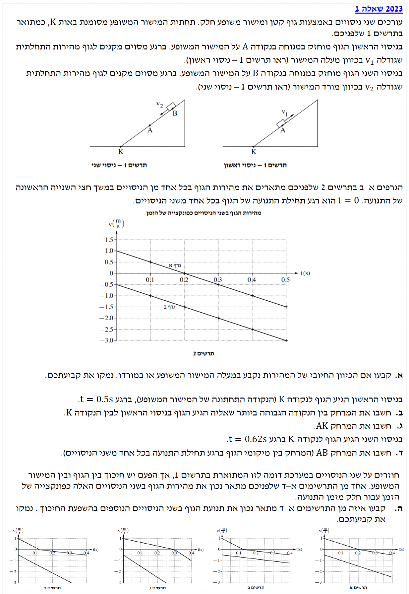
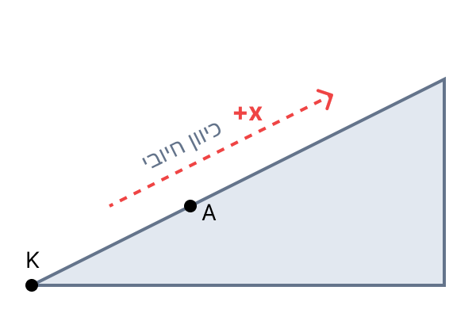
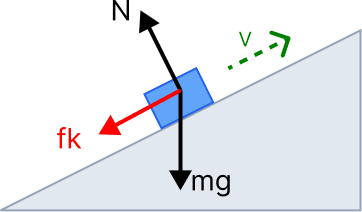
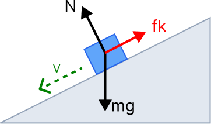

מתוך תיאור הניסויים והגרפים:
בניסוי 1 (גרף א'), הגוף נדחף במעלה המישור, והמהירות ההתחלתית בגרף (בזמן \( t=0 \)) היא חיובית ושווה ל- \( v_1 = 1.0 \text{ m/s} \).
בניסוי 2 (גרף ב'), הגוף נדחף במורד המישור, והמהירות ההתחלתית בגרף היא שלילית ושווה ל- \( v_2 = -0.5 \text{ m/s} \).
לקבוע ולנמק האם הכיוון החיובי של ציר המקום נקבע במעלה המישור המשופע או במורדו.
אין צורך בנוסחה מתמטית, אלא בהבנה קינמטית: סימן המהירות (\( + \) או \( - \)) מעיד על כיוון התנועה ביחס לציר הייחוס שנבחר.
נבחן את ניסוי 1 המתואר על ידי "גרף א'". אנו יודעים כי הגוף נדחף מכיוון הנקודה K כלפי מעלה המישור. בגרף א', המהירות בזמן אפס היא חיובית (\( +1.0 \text{ m/s} \)). מכיוון שהגוף נע בפועל למעלה, והמהירות שלו מיוצגת בגרף כערך חיובי, אנו מסיקים כי הכיוון החיובי של ציר התנועה הוגדר כך שהוא מצביע למעלה המישור המשופע. הדבר תואם גם את ניסוי 2, בו הגוף נדחף למטה, ואכן בגרף ב' המהירות ההתחלתית שלו היא שלילית.

אנו דנים בניסוי 1 (גרף א').
זמן הגעה לנקודה הגבוהה ביותר: מתוך הגרף, ברגע בו המהירות מתאפסת \( v=0 \), הגוף עוצר רגעית בשיא הגובה. זה קורה בזמן \( t_1 = 0.2 \text{ s} \).
זמן הגעה לנקודה K (תחתית המישור): נתון כי \( t_2 = 0.5 \text{ s} \).
מהירות בזמן \( t_2 = 0.5 \text{ s} \): מתוך גרף א', ניתן לראות כי \( v(0.5) = -1.5 \text{ m/s} \).
את המרחק שעבר הגוף בין שיא הגובה (בזמן \( t=0.2\text{s} \)) לבין הנקודה K (בזמן \( t=0.5\text{s} \)).
אנו יכולים לחשב את ההעתק בשתי דרכים: או באמצעות שטח כלוא מתחת לגרף מהירות-זמן, או בעזרת נוסחת מקום-זמן עבור תנועה שוות-תאוצה:
בנוסף, נזדקק לנוסחת מציאת שיפוע הגרף כדי למצוא את התאוצה:
תחילה, נחשב את תאוצת הגוף. ניקח שתי נקודות נוחות על גרף א': \( (0, 1.0) \) ו- \( (0.2, 0) \).
\[ a = \frac{0 - 1.0}{0.2 - 0} = -5 \text{ m/s}^2 \]התאוצה שלילית, כפי שניתן לצפות, מכיוון שרכיב כוח הכובד פועל במורד המישור (נגד הכיוון החיובי).
כעת, נחשב את ההעתק בקטע הזמן שבין \( t_1=0.2\text{s} \) ל- \( t_2=0.5\text{s} \). נשתמש בחישוב השטח הכלוא בין גרף הפונקציה לבין ציר הזמן. שטח זה הוא משולש:
ההעתק הוא שלילי כיוון שהגוף נע במורד המישור. מכיוון שביקשו מאיתנו "מרחק" (גודל סקלרי חיובי), ניקח את הערך המוחלט:
\[ d = |\Delta x| = |-0.225| = 0.225 \text{ m} \]ניסוי 1 התחיל בנקודה A בזמן \( t=0 \).
הגוף סיים את תנועתו בנקודה K בזמן \( t=0.5 \text{ s} \).
תאוצת הגוף חושבה קודם והיא \( a = -5 \text{ m/s}^2 \).
מהירות התחלתית (נקודה A): \( v_0 = 1.0 \text{ m/s} \).
את המרחק בין הנקודה A (נקודת ההתחלה) לנקודה K (נקודת הסיום בניסוי 1).
נשתמש בנוסחת מקום-זמן כדי למצוא את מיקום הגוף בנקודה K יחסית לנקודה A.
נציב את מערכת הצירים שלנו כך שהנקודה A תהיה ראשית הצירים (כלומר \( x_0 = x_A = 0 \)).
נציב את הנתונים לנוסחה עבור הזמן שבו הגוף הגיע לנקודה K (\( t = 0.5\text{s} \)):
המיקום של K ביחס ל-A הוא \( -0.125\text{m} \). המשמעות היא שהנקודה K נמצאת "למטה" מנקודה A על המישור במרחק של 0.125 מטרים. נזכור כי המרחק הוא גודל חיובי:
\[ d_{AK} = |-0.125| = 0.125 \text{ m} \]מניסוי 2 (גרף ב'):
זמן התחלה בנקודה B: \( t=0 \).
מהירות התחלתית בנקודה B: \( v_{0_B} = -0.5 \text{ m/s} \).
זמן הגעה לנקודה K: \( t_{end} = 0.62 \text{ s} \).
תאוצת הגוף נשארה זהה (השיפועים של גרף א' וגרף ב' מקבילים), ולכן \( a = -5 \text{ m/s}^2 \).
מסעיף ג' אנו יודעים שהמרחק בין A ל-K הוא \( 0.125\text{m} \).
את המרחק ההתחלתי שבין נקודה A לנקודה B.
שוב, נשתמש בנוסחת הקינמטיקה למקום כפונקציה של הזמן, אך הפעם נציב את הנקודה K כראשית הצירים לטובת נוחות החישוב.
ראשית, נגדיר את מערכת הצירים כך שהנקודה K נמצאת ב- \( x_K = 0 \). מכיוון שהכיוון החיובי הוא למעלה המישור, הנקודה A (שנמצאת מעל K) ממוקמת ב- \( x_A = +0.125 \text{ m} \).
כעת ננתח את תנועת הגוף מנקודה B. הוא מתחיל במיקום \( x_B \) לא ידוע, ומוסר לנו כי בזמן \( t=0.62\text{s} \) הוא מגיע לנקודה K (כלומר המיקום הסופי שלו הוא אפס).
קיבלנו שמיקום הנקודה B ביחס ל-K הוא \( 1.271 \text{ m} \) במעלה המישור.
כדי למצוא את המרחק AB, נחסר את מיקום הנקודה A ממיקום הנקודה B:
כעת המשטח אינו חלק, כלומר קיים כוח חיכוך קינטי \( f_k \) הפועל תמיד בניגוד לכיוון התנועה הרגעי של הגוף.
תאוצת הכובד פועלת תמיד כלפי מטה, ורכיבה המקביל למישור (\( mg \sin\alpha \)) פועל תמיד במורד המישור (נגד הכיוון החיובי).
לבחור איזה מארבעת הגרפים המוצעים (א, ב, ג, ד) מתאר נכון את מהירות הגוף בשני הניסויים תחת השפעת חיכוך, ולנמק.
נשתמש בחוק השני של ניוטון כדי למצוא ביטוי לתאוצה, ובנוסחת החיכוך הקינטי:
ננתח את שני מצבי התנועה האפשריים על המישור, ונבנה עבורם משוואות כוחות. נקפיד לזכור שהכיוון החיובי (\( +x \)) הוגדר במעלה המישור.
מצב 1: הגוף נע במעלה המישור (ניסוי 1 בהתחלה)
כאשר הגוף נע למעלה, כוח החיכוך \( f_k \) פועל למטה (בכיוון השלילי), וכך גם רכיב כוח הכובד.
התאוצה כאן היא שלילית וגדולה בערכה המוחלט מאשר ללא חיכוך. המשמעות הקינמטית בגרף: שיפוע הגרף בזמן עלייה יהיה חיובי-שלילי ותלול מאוד (תלול יותר מהמצב ההתחלתי).

מצב 2: הגוף נע במורד המישור (ניסוי 1 לאחר העצירה, וניסוי 2 כולו)
כאשר הגוף נע למטה, כוח החיכוך משנה את כיוונו ופועל כלפי מעלה (הכיוון החיובי). רכיב הכובד נשאר פועל למטה.
התאוצה כאן היא עדיין שלילית (בהנחה שהגוף מאיץ למטה), אך קטנה יותר בערכה המוחלט מאשר ללא חיכוך. המשמעות הקינמטית בגרף: שיפוע הגרף בזמן ירידה יהיה מתון יותר.

מסקנה: אנו מחפשים גרף שבו בזמן העלייה (\( v > 0 \)) גודל התאוצה מקסימלי, כלומר השיפוע תלול מאוד (שלילי חזק). בזמן הירידה (\( v < 0 \)), החיכוך מתנגד לכבידה ולכן גודל התאוצה קטן יותר, כלומר השיפוע מתון יותר. בנוסף, קו ניסוי 2 (שבו הגוף נע רק למטה) חייב להיות מקביל לחלק היורד של תנועת הגוף בניסוי 1.